Le règlement général sur la protection des données RGPD a permis de protéger nos données privées en obligeant les fournisseurs de contenu à spécifier les informations personnelles récupérées, et plus particulièrement en demandant l’autorisation à l’utilisateur de le faire.
La contrepartie pour l’utilisateur a été les “cookie walls”, les pop-ups de validation des cookies qui sont devenus systématiques. Un gain pour les données privées, mais quid de l’impact environnemental de ces éléments (et aussi de l’accessibilité ?) et est-ce que la validation ou non des cookies change cet impact ?
Sur cette dernière question, on s’attend à avoir un impact plus faible si l’on ne valide pas les cookies. Effectivement, la non-validation des cookies invalide le chargement de certains services comme les services d’analytiques et autre.
Nous allons utiliser les outils Greenspector pour étudier ces éléments, en prenant le cas des sites d’information. Nous avons automatisé un parcours : affichage de la page, actions diverses pour afficher le bouton de validation des cookies (scroll…), validation des cookies et affichage de la page finale.
Ces tests sont lancés sur notre banc de test Cloud sur des devices réels pour 30 sites différents :
- https://www.20minutes.fr/
- https://actu.fr/
- https://www.bfmtv.com/
- https://www.cnews.fr/
- https://www.estrepublicain.fr/
- https://www.france24.com/fr/
- https://www.francebleu.fr/
- https://www.francetvinfo.fr/
- https://www.huffingtonpost.fr/
- https://www.la-croix.com/
- https://www.ladepeche.fr/
- https://www.liberation.fr/
- https://www.lindependant.fr/
- https://www.midilibre.fr/
- https://www.nouvelobs.com/
- https://www.lanouvellerepublique.fr/
- https://www.laprovence.com/
- https://www.lavoixdunord.fr/
- https://www.ledauphine.com/
- https://www.lefigaro.fr/
- https://www.lemonde.fr/
- https://www.leparisien.fr/
- https://www.lepoint.fr/
- https://www.leprogres.fr/
- https://www.letelegramme.fr/
- https://www.lexpress.fr/
- https://www.ouest-france.fr/
- https://www.parismatch.com/
- https://www.rfi.fr/fr/
- https://www.sudouest.fr/
Vous retrouverez les noms des étapes suivantes dans tous les résultats :
- CHRGT_initial : Chargement initial de la page
- PAUSE_initial : Idle sur la page pendant 30s
- CHRGT_AfternRGPDAgreement : Chargement de la page suite à l’acceptation des cookies
- PAUSE_final : Idle sur la page après validation pendant 30s
Fonctionnement des cookies
Le RGPD demande aux fournisseurs de services de demander le consentement à l’utilisateur quant aux données personnelles qui vont être utilisées. Cela implique donc de mettre en place un mécanisme de notification. Il s’agit généralement d’un bandeau.
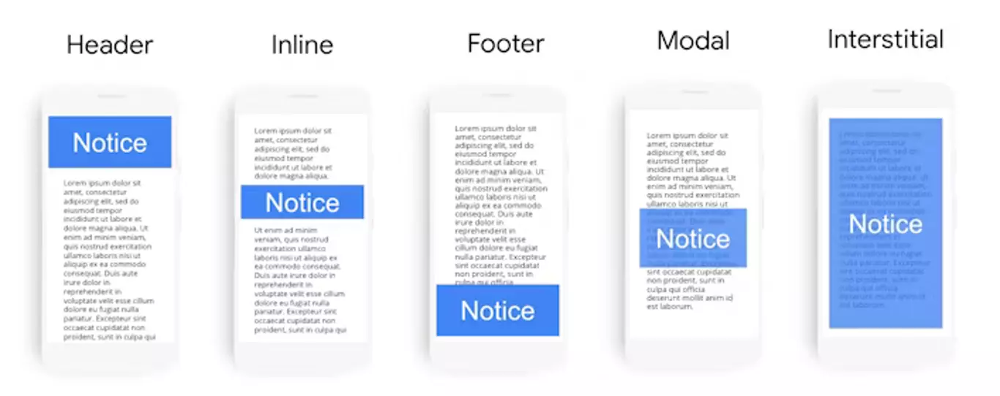
L’utilisateur peut accepter ou refuser les cookies non-nécessaires. Il peut aussi, si le fournisseur le permet, refuser ou accepter finement par rapport à une liste. Il peut aussi ne pas donner suite aux notifications. Dans ce cas, si le placement du bandeau le permet, il peut continuer à utiliser le service.
Si certains services ne sont pas acceptés, cela impliquera que certaines fonctionnalités ne soient pas disponibles pour l’utilisateur par exemple un plugin de chat). Dans la plupart des cas, comme par exemple pour les publicités, le service sera fonctionnel, mais aucune information personnelle ne pourra être utilisée par le service (par exemple pour proposer des publicités ciblées). Certains services « oublient” la réglementation alors qu’ils devraient la gérer (par exemple les Google fonts).
Certains sites bloqueront le service totalement, on appelle cela un cookie wall. Ce type de notification est répandu dans les sites d’information que nous avons évalués.
Pour plus d’information sur le RGDP, nous vous invitons à suivre le MOOC CNIL.
Résultats macro
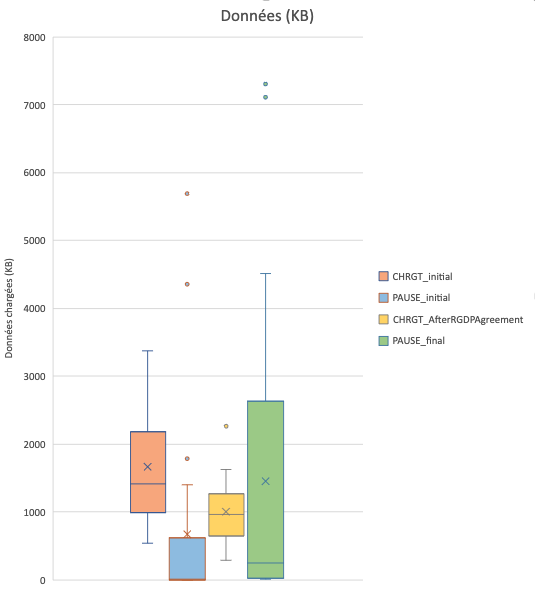
La médiane des données chargées des sites est à 1,3MB (bleu foncé). Ensuite, pour la plupart des sites, l’inactivité n’implique que très peu de données (en orange) ; c’est ce que l’on attend car aucun service ne doit être lancé. On observe cependant certaines “anomalies” (les points au-dessus des moustaches). Il s’agit généralement de vidéos qui sont lancées automatiquement. Ceci est potentiellement une anomalie d’un point de vue RGPD et d’un point de vue sobriété (La lecture automatique des contenus n’est pas recommandée). Cependant, on peut aussi imaginer que le service vidéo qui se lance n’utilise pas de données personnelles et le fera ou non à la suite de la validation.
Le chargement suite à la validation des cookies implique le chargement supplémentaire de 1Mo de données. C’est un comportement normal, car la validation des cookies devrait enclencher le chargement de certains services. On voit cependant, vu le ratio (1,3Mo avant), on peut supposer que des services sont chargés (et pas nécessairement tous appelés) avant la validation. C’est un gaspillage, car si l’utilisateur ne valide pas les cookies, le chargement d’une librairie n’est pas nécessaire.
On peut noter que certains services de gestion de cookies traitent cela nativement (par exemple https://tarteaucitron.io/fr/).
Avec la validation des cookies, on voit une consommation de données qui augmente, ceci étant normalement dû au chargement des services autorisés.
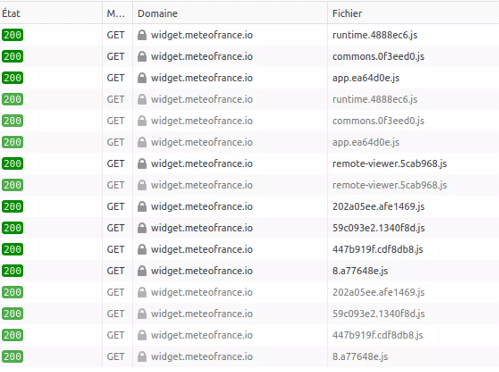
Sur francebleu.fr, on voit par exemple juste après le chargement initial et avant la validation, le chargement du widget meteofrance (plus de 400ko). La validation des cookies n’amène aucun chargement (donc tout a été chargé avant validation). On peut alors se poser la question sur l’usage de données personnelles dans ce cas (voir par exemple l’analyse de Pixel de Tracking)
À l’opposé, cnews.fr a une consommation de données à 0 ko suite au chargement initial et une consommation importante suite au consentement des cookies.
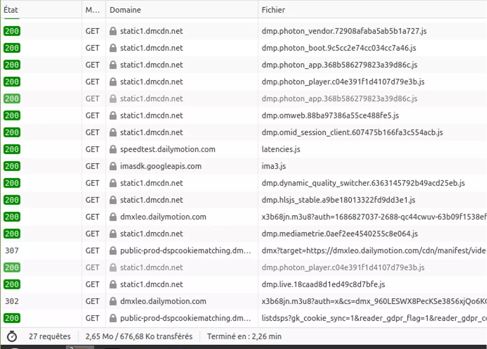
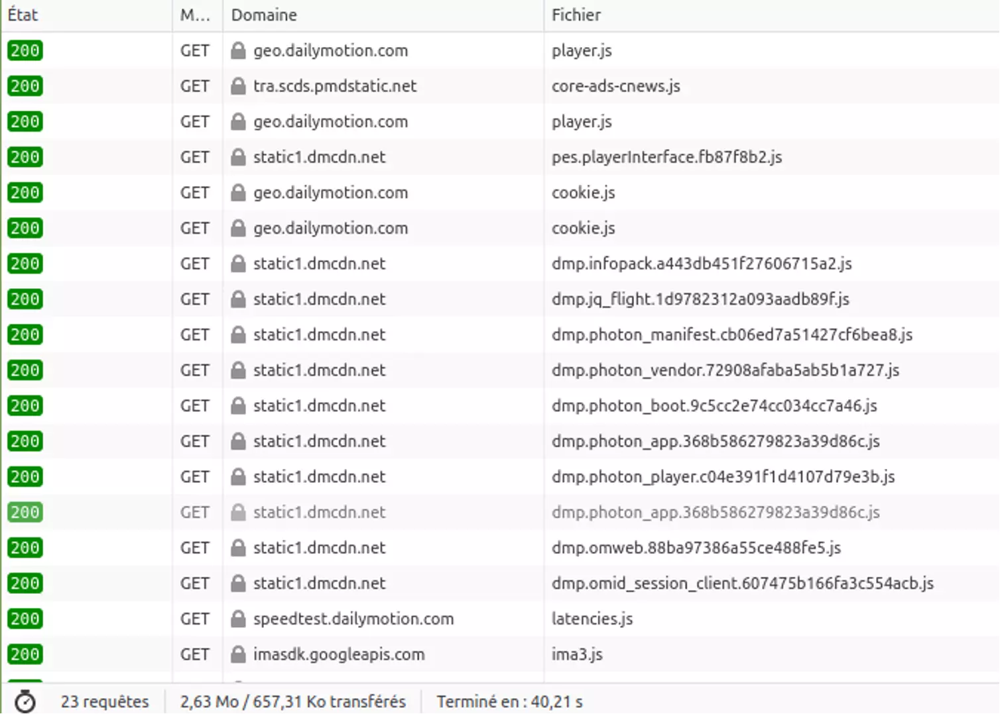
À noter sur ce dernier cas, si l’on ne consent pas aux cookies, il y a un peu moins de cookies cependant il semble qu’il y ait toujours beaucoup de requêtes (23 versus 27). Cela s’explique que certains services sont totalement bloqués mais que de nombreux services sont lancés (avec normalement aucune donnée personnelle utilisée).
Energie
Concernant l’énergie, nous allons observer deux métriques : l’énergie totale consommée sur l’étape et la vitesse de décharge de l’étape.
La consommation d’énergie est légèrement plus importante au chargement suite à la validation des cookies. Ceci est principalement lié au chargement des librairies autorisées avec les cookies et d’autre part à des repaints et reflows de la page suite à ces chargements. Ceci dit, le contenu utile (photo, texte) est généralement chargé initialement, le coût du consentement amène, en termes d’énergie, à un équivalent de deuxième chargement.
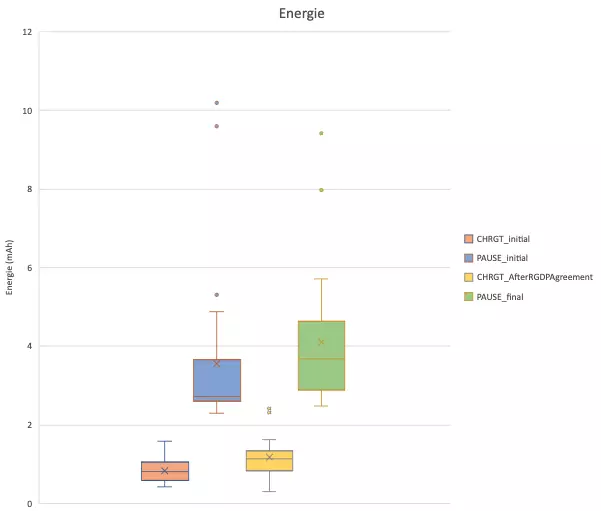
La consommation lors des étapes d’inactivité est plus importante suite à la validation. Le déclenchement de certaines librairies d’analytiques et des vidéos induisent effectivement une surconsommation.
Vitesse de décharge
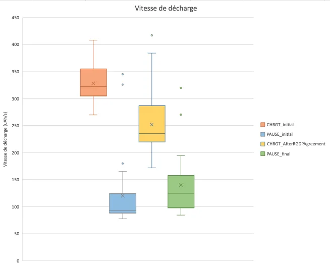
À noter, la consommation écran inactif suite au chargement initial pourrait être limitée. Par exemple sur Cnews.fr, une animation de type chargement de contenu en arrière-plan fait tripler la consommation de base du téléphone.
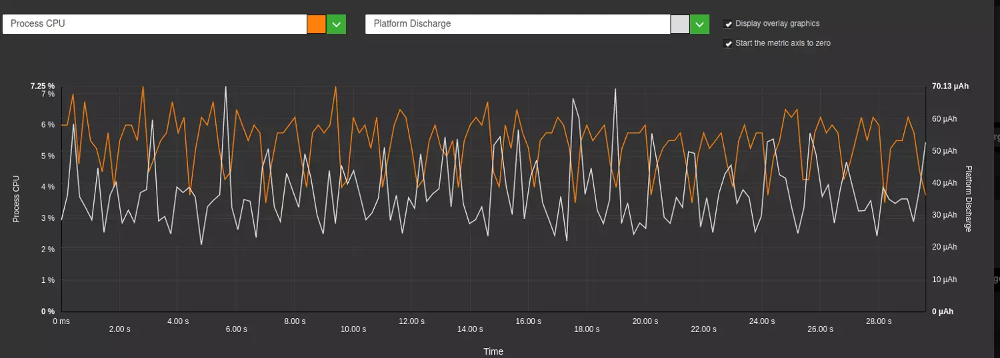
Mémoire
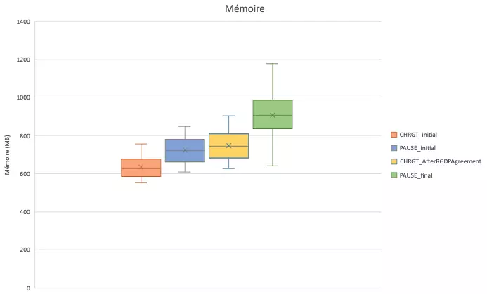
La validation du consentement fait augmenter la consommation mémoire. Ceci s’explique pour les librairies qui sont chargées.
Voici l’exemple du chargement suite à consentement pour leparisien.fr, on observe bien les augmentations de l’utilisation de la mémoire à chaque chargement de librairie :
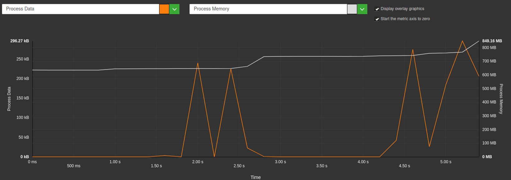
Refus du consentement, moins d’impact ?
Nous avons aussi automatisé le parcours de refus des cookies. Cependant, de nombreux sites n’ont pas pu être mesurés pour différentes raisons :
- Pas de bouton accessible facilement pour refuser, cela étant bien sûr en désaccord avec la RGPD (Cela aurait été potentiellement possible d’automatiser mais aurait demandé un peu plus de temps, et cela est dans tous les cas représentatifs d’un problème d’UX : les utilisateurs vont difficilement refuser les cookies.
- Le refus sans un abonnement n’est pas possible
Exemple d’UX avec un refus possible (même s’il aurait été plus accessible avec un bouton plus visible, il est dans la pop-up initial) :
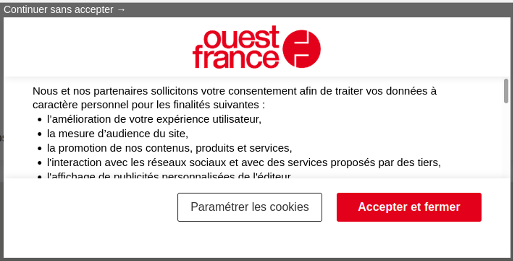
On peut féliciter les sites qui restent dans la liste, le bouton de refus était accessible facilement !
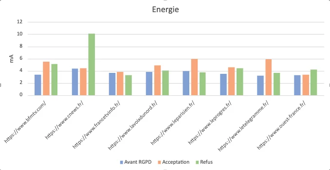
Dans la plupart des cas, l’énergie consommée est plus faible suite à un refus qu’un consentement. Ceci semble logique par rapport à des chargements moins importants de librairies.
Dans certains cas comme Cnews, on a vu que le refus n’annulait pas certains services comme les vidéos (ce qui est potentiellement normal si le service n’utilise pas de données personnelles).
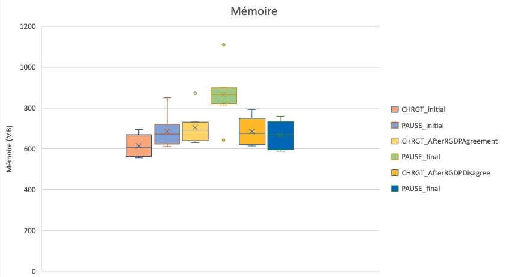
Sur la mémoire, on voit vraiment l’impact du consentement.
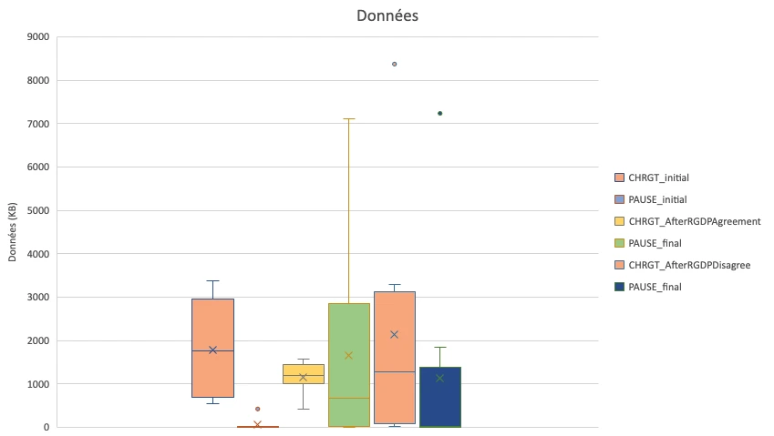
Concernant les données, le refus du consentement amène encore beaucoup de données, parfois autant que l’acceptation (gris versus bleu ciel). La consommation en inactivité est légèrement plus faible.
Pas de réponse à la notification, moins d’impact ?
Il est clair que si aucune réponse n’est donnée à la notification, l’impact est beaucoup plus faible (c’est uniquement l’impact du chargement initial). On peut moduler cela sur mobile et sur les sites évalués, car il s’agit de pop-up de notification qui ne permet pas une navigation sans réponse.
Analyse de l’impact
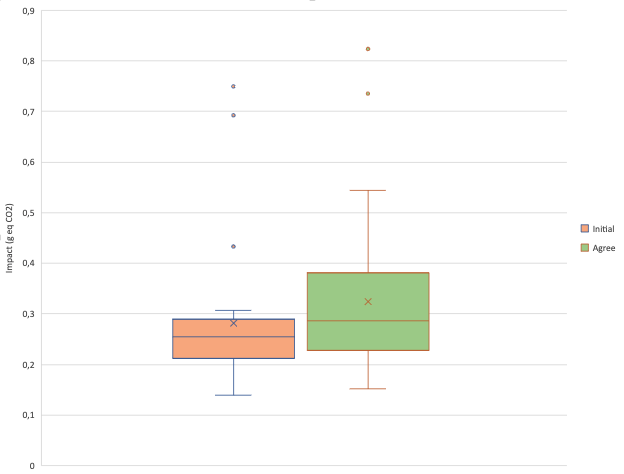
Nous allons maintenant utiliser le modèle d’impact Greenspector pour estimer l’impact environnemental des différents états de la validation RGPD. Pour cela, nous prenons l’hypothèse d’une localisation des utilisateurs et des serveurs en France, toutes les phases du matériel étant prises en compte.
Nous estimons l’impact à chaque fois du chargement de la page et de 30s d’inactivité.
Le chargement initial est beaucoup plus faible que l’étape de validation RGPD (et des 30 secondes d’inactivité). Ceci s’explique par les éléments relevés plus haut (chargement des scripts, repaint, librairies qui fonctionnent…). La borne maximale est à 0,3g eq Co2 en chargement initial alors qu’elle est à 0,55 g pour la validation RGPD.
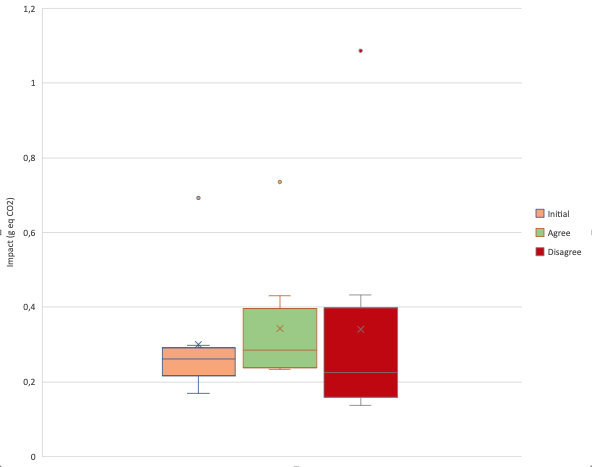
Quand on prend le panel de sites que l’on a mesuré avec le refus des cookies.
L’impact est relativement plus faible, ce qui normal mais la borne maximale est égale à celle avec validation RGDP. Statistiquement, dans tous les cas, l’impact augmente suite à une validation ou refus RGPD. Cela s’explique par le fait que le refus implique même parfois de scroller pour atteindre les boutons à cliquer afin de valider son choix.
Prise en compte des cookies dans les outils d’évaluation de l’impact
L’un des biais de la mesure de pages d’un site via la plupart des outils est que l’on simule la navigation par un utilisateur qui n’interagit pas avec la page. Entre autres, aucun choix n’est effectué pour le consentement au recueil des données personnelles. Dans ce cas on évalue qu’un tiers des cas possibles (validation et refus ne sont pas évalués).
Deux solutions sont possibles :
- On simule les cookies dans les headers via les outils de mesure
- On automatise le parcours utilisateurs.
La deuxième solution est préférable car on sera proche de ce qui se passe chez l’utilisateur. En effet, l’UI de la validation des cookies implique de scroller pour atteindre des boutons et de nombreux boutons sont disponibles, la validation implique le chargement de scripts (et pas la simulation des cookies).
Exemple d’usage du header pour simuler les cookies sur lighthouse :
lighthouse <url> --extra-headers "{\"Cookie\":\"cookie1=abc; cookie2=def; \_id=foo\"}"Comment utiliser Greenspector pour évaluer la validation des cookies sur son service numérique ?
Nous utilisons principalement l’approche d’automatisation pour gérer les cookies. Pour cela nous utilisons le langage GDSL de l’outil qui permet d’automatiser simplement un parcours.
Il est important en effet de bien gérer les cookies. Si vous testez votre site avec les outils développeurs ou avec des outils de monitoring synthétique, vous risquez d’être toujours dans le même cas (soit cookies jamais validés soit le contraire)
Nous lançons une première fois l’url et nous attendons la fin du chargement. Le chargement est encadré par measureStart et measureStop, ce qui permet de mesurer différentes métriques sur le chargement : performance, énergie, donnée…
browserGoToUrl,${URL}
measureStart,CHRGT_initial
pressEnter
waitUntilPageLoaded,40000
MeasureStopNous mesurons ensuite le site inactif, normalement la pop-up de cookies est apparu avec le chargement.
measureStart,PAUSE_initial
pause,30000
MeasureStop Nous nous attendons ici à une consommation de donnée faible, car aucun service ne doit être encore autorisé.
Nous traitons ici un service de gestion de cookies que l’on retrouve dans une grosse partie des sites d’information (Didomi)
if,exists,id,didomi-popup
measureStart,CHRGT_AfterRGDPAgreement
swipeDownward
swipeDownward
swipeDownward
clickById,didomi-notice-agree-button
waitUntilPageLoaded,40000
measureStop
FiLe if permet d’exécuter la séquence uniquement si la pop-up est présente. Nous scrollons 3 fois pour arriver en bas de page avec swipeDownward et nous cliquons sur le bouton de validation qui est standardisé avec un identifiant didomi-notice-agree-button.
Nous réalisons ensuite une mesure du site inactif :
measureStart,PAUSE_final
pause,30000
MeasureStop D’autres lignes de test sont présentes pour gérer d’autres framework de cookies, nous ne rentrerons ici pas dans les détails. Contactez-nous si vous voulez intégrer ce type de test !
Bonnes pratiques
Le processus de notification des cookies a un impact non négligeable. Compte-tenu du fait que cette fonctionnalité se retrouve sur quasiment tous les sites, il est important d’appliquer des bonnes pratiques pour réduire son impact.
Ne pas utiliser de plugin du tout et regarder la préférence de l’utilisateur
Très peu utilisé mais très pratique, l’utilisateur peut configurer l’option Global Privacy Control dans le navigateur. Ceci impliquera de gérer le header associé.
Ne pas utiliser de plugin du tout en rendant les cookies optionnels inactif
En effet, les cookies pour certains services ne nécessiteront pas de notification. Ceci nécessitera peut-être une configuration des plugins (voir exemple pour les analytics ici). Cette approche est louable car elle ira dans une démarche de Privacy By Design.
Laisser l’utilisateur naviguer sans validation des cookies
Ceci permettra d’éviter des traitements inutiles.
Ne pas cacher les services qui utilisent des données personnelles
Cela va mieux en le disant, il faut éviter les dark patterns qui permettent de récupérer les données personnelles.
Chargement du script de notification au plus tôt
Afin de réduire l’impact de la notification lors du chargement initial, il faut charger le plugin de gestion des cookies au plus tôt:
- Charger le script de façon asynchrone avec Async
- Etablir une connexion au plus tôt avec le site d’origin du cookies avec dns-prefetch ou preconnect
- Pré-charger le plugin avec preload
Réduire l’impact du plugin de notification
- Benchmarker les plugins pour identifier les librairies qui ont un impact le plus faible (taille et cpu)
- Proposer une interface de gestion des différents services simple et efficiente
- Proposer un bouton visible de refus (au même niveau que l’acceptation)
Eviter les layout shift du au plugin de notification
- Utiliser des sticky footer ou des modals pour éviter des layout shift
- Eviter les animations dans le plugin de notification
- Limiter la stylisation de la notice (par exemple utiliser les polices systèmes)
Eviter les animations lors de la notification
Mettre un placeholder de chargement du contenu en arrière-plan pour indiquer à l’utilisateur l’attente amènera une surconsommation inutile. La pop-up de notification est déjà une information d’attente.
Ne charger les librairies optionnelles qu’à la validation
Si certaines librairies ne peuvent pas être chargée si pas de consentement, alors il faut prévoir le chargement uniquement au consentement.
Limiter l’impact des librairies chargées à la validation
- Réduire leur taille (ou benchmarker les pour avoir une plus légère)
- Eviter les impacts sur le shift layout (limiter et regrouper par exemple les modifications du dom)
Pour les librairies nécessaires mais qui ont une prise en compte du consentement, charger au plus tôt la librairie
Il est nécessaire d’appliquer les mêmes stratégies que pour le chargement de la notification mais de charger la librairie sans gestion de données personnelles. Elles seront prises en compte dynamiquement uniquement si consentement.
Tester votre solution avec différents comportements de consentement
Les mesures le montrent, l’impact de votre solution va varier énormément en fonction de l’utilisateur : avec consentement, avec refus du consentement ou sans actions de l’utilisateur. Il est important de maîtriser dans ce cas les chargements des différentes librairies et de connaitre le comportement réel. Des améliorations sont sûrement possibles !